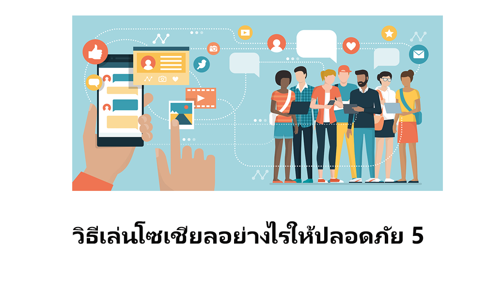

 |
1.ใช้วิจารณญาณในการเสพข่าวสาร ปัจจุบันไม่ว่าใครๆ ก็ต่างโพสต์ข้อความลงบนโลกโซเชียลได้ทั้งนั้น ด้วยเหตุนี้เองในแต่ละวันบนโลกโซเชียลจึงเต็มไปด้วยข้อมูลข่าวสารที่อาจเป็นเรื่องจริงหรือเรื่องแต่ง ซึ่งเราในฐานะผู้เสพเนื้อหาจำเป็นอย่างยิ่งที่จะต้องใช้วิจารณญาณในการเสพข่าว การแชร์หรือคอมเมนต์ข้อความใดๆ บนแหล่งข่าวที่ไม่รู้ที่มาที่ไปย่อมสุ่มเสี่ยงต่อ การกระทำความผิดและทำให้เรื่องดังกล่าวนั้นบานปลายออกไปอีกมาก
2.พึงระลึกไว้เสมอว่า “บนโลกโซเชียลไม่มีคำว่าส่วนตัว” หลายๆ คนมักตกหลุมพรางในการเล่นโซเชียลด้วยความคิดที่ว่า การตั้งค่าให้เห็นเฉพาะเพื่อนคือการสร้างความเป็นส่วนตัว แต่ในความเป็นจริงแล้วโพสต์ต่างๆ ที่เราได้นำขึ้นไป บนโลกโซเชียลย่อมกลายเป็นสิ่งของสาธารณะที่ไม่ว่าใครก็สามารถเห็นได้ ถึงแม้วันนี้เราจะโพสต์รูปภาพหรือข้อความต่างๆ ให้เฉพาะกลุ่มเพื่อนได้เห็น แต่มันใจได้อย่างไรว่าพวกเขาเหล่านั้น จะไม่กดเซฟหรือส่งต่อโพสต์เหล่านี้ไปให้บุคคลที่ 3 ได้รับรู้ ?
3.อย่าแสดงความรู้สึกทุกอย่างลงบนโลกโซเชียล หลายๆ คนมักโพสต์อารมณ์และความรู้สึกนึกคิดต่างๆ ลงบนบัญชีโซเชียลมีเดีย ไม่ว่าจะเป็น ทะเลาะกับแฟน เบื่องานประจำที่ทำ งอนเพื่อน ฯลฯ ซึ่งการโพสต์ความรู้สึกต่างๆ เหล่านี้โดยไม่ไตร่ตรองให้ดี บางครั้งก็เปรียบเสมือนกับดาบสองคมที่ย้อนกลับมาทำร้ายเราในภายหลัง (อย่าลืมว่า HR สมัยนี้ส่อง Facebook และ Twitter เก่งมากนะครับ)
4.เปิดเผยข้อมูลให้น้อยที่สุด อย่างที่กล่าวไปในข้อ 2. ว่าบนโลกโซเชียลไม่มีคำว่าเป็นส่วนตัว ดังนั้นจึงควรระมัดระวังในการลงข้อมูลสำคัญๆ ที่เกี่ยวกับตัวเรา เช่น ชื่อ–นามสกุล เบอร์โทรศัพท์ ไอดีไลน์ ที่อยู่ หรือแม้แต่การเช็คอินเพื่อบอกสถานที่ในบางครั้งก็อาจเป็นการนำภัยมาสู่เราได้โดยไม่รู้ตัวเช่นเดียวกัน (โดยเฉพาะการโพสต์อวดทรัพย์สิน รูปถ่ายของบ้าน และการบ่งบอกสถานะว่ากำลังอยู่คนเดียว เป็นต้น)
5.รหัสผ่านเป็นสิ่งที่เราต้องรู้เพียงคนเดียวเท่านั้น ข้อสุดท้ายเป็นข้อที่สำคัญที่สุด!! นั่นคือรหัสผ่านของบัญชีโซเชียลมีเดียต่างๆ จะต้องเป็นสิ่งที่มีเรารู้เพียงคนเดียวเท่านั้น การบอกรหัสผ่านให้บุคคลอื่นๆ หรือการล็อคอินโซเชียลมีเดีย ในที่สาธารณะจำเป็นอย่างยิ่งที่จะต้องใช้ความระมัดระวัง เพราะต้องไม่ลืมว่า พรบ.คอมพิวเตอร์ และ พรบ.ไซเบอร์ สามารถเอาผิดกับเจ้าของบัญชีแอคเคาท์ต่างๆ ที่มีพฤติกรรมบนโลกโซเชียลที่ไม่เหมาะสมได้แล้ว และนี่ก็เป็น 5 วิธีการเล่นโซเชียลอย่างไรให้ปลอดภัยที่เราได้นำมาฝากชาว Gen-C กันในวันนี้ หวังว่าทุกคนจะใช้วิจารณญาณและสติให้รอบคอบ เพื่อที่เราจะได้ไม่ต้องตกเป็นเหยื่อของความน่ากลัวบนโลกโซเชียลอีกต่อไปนั่นเอง |